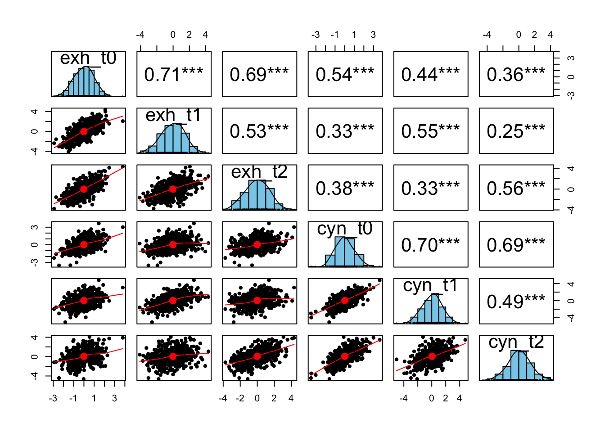
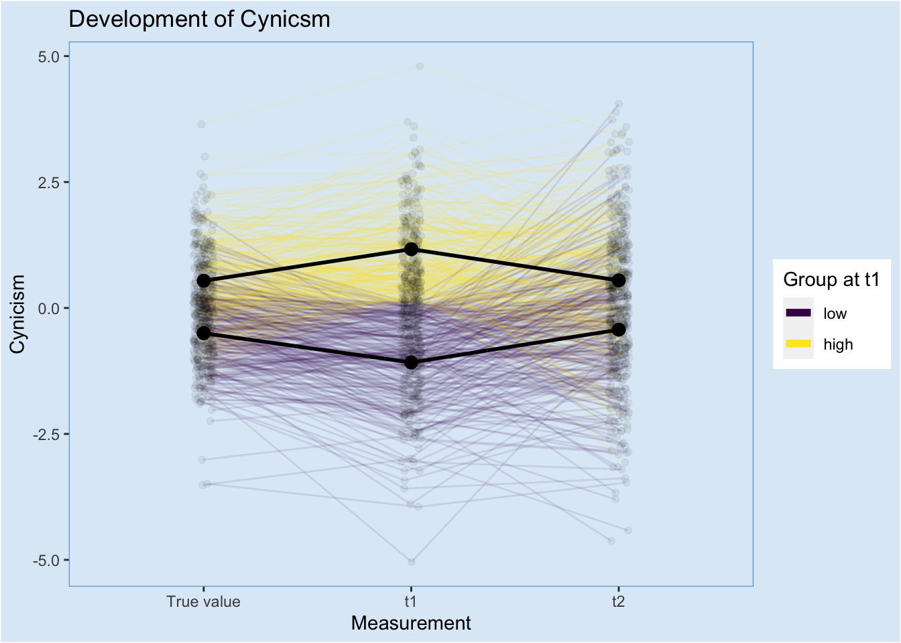
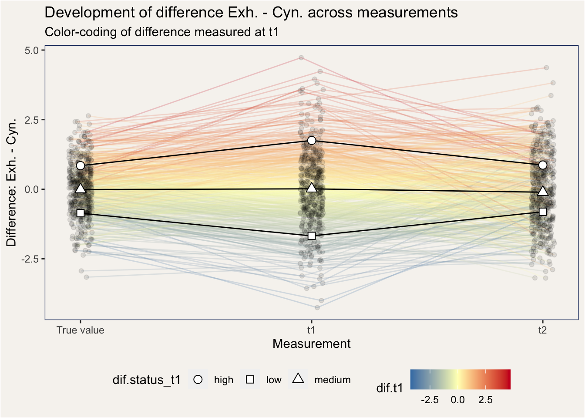
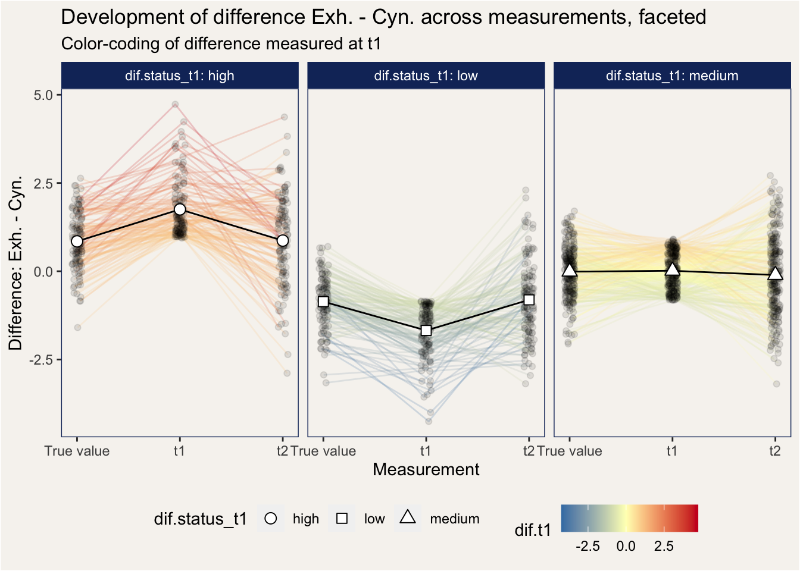

Burnout-Forschung
simdata <- function(n = 500, r = 0.55, mu = c(0, 0), names = c("exh", "cyn")) {
s = matrix(c(1, r, r, 1), ncol = 2)
x <- matrix(rep(NA, times = n*2), ncol = 2)
id <- rep(NA, times = n)
if (is.vector(mu)) {
x <- mvrnorm(mu = mu, Sigma = s, n = n)
id <- 1:n
} else if (nrow(mu) == n) {
for (i in 1:n) {
tmu <- c(mu[[i,1]], mu[[i, 2]])
x[i,] <- mvrnorm(mu = tmu, Sigma = s, n = 1)
id[i] <- i
}
}
colnames(x) <- names
d <- as_tibble(x)
d$id <- id
return(d)
}sim_covariate <- function(n = 500, r = 0.6) {
s = matrix(c(1, r, r^2, r, 1, r^2, r^2, r, 1), ncol = 3)
x <- mvrnorm(mu = c(0, 0, 0), Sigma = s, n = n)
colnames(x) <- c("t0", "t1", "t2")
d <- as_tibble(x) %>%
mutate(id = 1:n()) %>%
pivot_longer(t0:t2, names_to = "time") %>%
arrange(time)
return(d %>% pull("value"))
}set.seed(12345)
true <- simdata()
t1 <- simdata(mu = true)
t2 <- simdata(mu = true)
true$time <- "t0"
t1$time <- "t1"
t2$time <- "t2"corrdat <- bind_rows(true, t1, t2) %>%
pivot_wider(names_from = "time", values_from = c("exh", "cyn")) %>%
dplyr::select(-id)
corrmat <- corrdat %>% cor()
corrmat %>% round(2) %>% knitr::kable()| exh_t0 | exh_t1 | exh_t2 | cyn_t0 | cyn_t1 | cyn_t2 | |
|---|---|---|---|---|---|---|
| exh_t0 | 1.00 | 0.73 | 0.69 | 0.54 | 0.42 | 0.39 |
| exh_t1 | 0.73 | 1.00 | 0.51 | 0.39 | 0.55 | 0.28 |
| exh_t2 | 0.69 | 0.51 | 1.00 | 0.36 | 0.28 | 0.54 |
| cyn_t0 | 0.54 | 0.39 | 0.36 | 1.00 | 0.72 | 0.71 |
| cyn_t1 | 0.42 | 0.55 | 0.28 | 0.72 | 1.00 | 0.51 |
| cyn_t2 | 0.39 | 0.28 | 0.54 | 0.71 | 0.51 | 1.00 |
corrdat %>% psych::pairs.panels(hist.col = "skyblue", stars = TRUE)
values <- bind_rows(true, t1, t2) %>%
group_by(time) %>%
mutate(median.exh = median(exh)) %>%
mutate(median.cyn = median(cyn)) %>%
ungroup() %>%
mutate(exh.status = ifelse(exh < median.exh, "low", "high")) %>%
mutate(cyn.status = ifelse(cyn < median.cyn, "low", "high")) %>%
mutate(exh.status = factor(exh.status, levels = c("low", "high"),
ordered = TRUE)) %>%
mutate(cyn.status = factor(cyn.status, levels = c("low", "high"),
ordered = TRUE)) %>%
mutate(pattern = case_when(
(exh < median.exh) & (cyn < median.cyn) ~ "engagement",
exh.status != cyn.status ~ "inconsistent",
(exh > median.exh) & (cyn > median.cyn) ~ "burnout"
))
values %>% sample_n(10) %>% knitr::kable()| exh | cyn | id | time | median.exh | median.cyn | exh.status | cyn.status | pattern |
|---|---|---|---|---|---|---|---|---|
| 0.2707764 | -0.0271340 | 488 | t0 | 0.0859529 | 0.0766390 | high | low | inconsistent |
| -0.3261451 | 0.1336967 | 3 | t0 | 0.0859529 | 0.0766390 | low | high | inconsistent |
| 1.0096106 | 0.3885507 | 209 | t2 | 0.0167298 | 0.0472448 | high | high | burnout |
| 0.6382516 | -1.0800887 | 156 | t0 | 0.0859529 | 0.0766390 | high | low | inconsistent |
| -2.6760265 | -2.9943665 | 362 | t2 | 0.0167298 | 0.0472448 | low | low | engagement |
| -2.8226830 | -1.5536561 | 72 | t1 | 0.1327179 | -0.0048372 | low | low | engagement |
| -1.8575286 | -0.9926529 | 201 | t2 | 0.0167298 | 0.0472448 | low | low | engagement |
| 1.8476679 | 1.4121903 | 131 | t1 | 0.1327179 | -0.0048372 | high | high | burnout |
| 2.5542646 | 2.5093719 | 135 | t1 | 0.1327179 | -0.0048372 | high | high | burnout |
| 0.6542338 | -0.7381274 | 432 | t0 | 0.0859529 | 0.0766390 | high | low | inconsistent |
df <- values %>%
mutate(workload = sim_covariate()) %>%
mutate(control = sim_covariate()) %>%
mutate(reward = sim_covariate()) %>%
mutate(community = sim_covariate()) %>%
mutate(fairness = sim_covariate()) %>%
mutate(values = sim_covariate())jitter <- runif(n = nrow(df), min = -0.05, max = 0.05)
df <- df %>%
mutate(time.int = recode(time, "t0" = 1, "t1" = 2, "t2" = 3)) %>%
mutate(time.jit = time.int + jitter)status_wide <- df %>%
dplyr::select(id, time, exh.status, cyn.status) %>%
pivot_wider(names_from = "time", values_from = c("exh.status", "cyn.status"))
df <- left_join(df, status_wide, by = "id")
status_wide %>% sample_n(10) %>% knitr::kable()| id | exh.status_t0 | exh.status_t1 | exh.status_t2 | cyn.status_t0 | cyn.status_t1 | cyn.status_t2 |
|---|---|---|---|---|---|---|
| 406 | high | high | high | high | high | low |
| 488 | high | low | low | low | low | low |
| 405 | low | low | low | low | high | high |
| 186 | low | low | low | high | low | high |
| 96 | low | low | low | high | high | high |
| 157 | high | high | high | high | high | high |
| 402 | high | high | high | low | low | low |
| 7 | high | high | high | high | low | high |
| 276 | high | high | low | high | high | high |
| 252 | high | high | high | high | high | high |
pattern_wide <- df %>%
dplyr::select(id, time, pattern) %>%
pivot_wider(names_from = "time", values_from = pattern, names_glue="{.value}_{time}")
df <- left_join(df, pattern_wide, by = "id")
pattern_wide %>% sample_n(10) %>% knitr::kable()| id | pattern_t0 | pattern_t1 | pattern_t2 |
|---|---|---|---|
| 329 | engagement | inconsistent | inconsistent |
| 101 | inconsistent | inconsistent | inconsistent |
| 288 | engagement | engagement | burnout |
| 420 | burnout | burnout | inconsistent |
| 370 | inconsistent | engagement | engagement |
| 198 | engagement | engagement | engagement |
| 43 | engagement | engagement | engagement |
| 449 | inconsistent | burnout | inconsistent |
| 228 | inconsistent | inconsistent | inconsistent |
| 476 | inconsistent | inconsistent | inconsistent |
plt.single <- function(df) {
plt <- df %>%
ggplot() +
aes(x = time.jit, y = y) +
geom_line(aes(group = id, color = gr), alpha = 0.1) +
geom_point(alpha = 0.1, aes(color = gr)) +
# geom_hline(yintercept = medians$median.exh_t1, linetype = "dashed") +
scale_x_continuous(limits = c(0.5, 3.5), breaks = 1:3,
labels = c("True value", "t1", "t2")) +
guides(colour = guide_legend(override.aes = list(alpha = 1, size=2))) +
stat_summary(fun = "mean",
aes(x = time.int, group = gr),
geom = "line", size = 1) +
stat_summary(fun = "mean",
aes(x = time.int, group = gr, shape = gr),
geom = "point", size = 3, fill = "white") +
scale_shape_manual(values = c(22, 24)) +
NULL
return(plt)
}df %>% mutate(gr = exh.status_t1, y = exh) %>%
plt.single() +
scale_color_brewer(palette = "Set1") +
labs(x = "Measurement", y = "Exhaustion", color = "Group at t1",
title = "Development of Exhaustion", shape = "Group at t1")
df %>% mutate(gr = cyn.status_t1, y = cyn) %>%
plt.single() +
labs(x = "Measurement", y = "Cynicism", color = "Group at t1",
title = "Development of Cynicsm")
df %>%
ggplot() +
aes(x = exh, y = cyn) +
geom_point(alpha = 0.3) +
geom_smooth(method = "lm", se = F) +
facet_wrap(~time, labeller = label_both)
df %>%
ggplot() +
aes(x = exh, y = cyn) +
geom_point(alpha = 0.3) +
geom_smooth(method = "lm", se = F) +
facet_wrap(~pattern_t0, labeller = label_both)
df %>%
ggplot() +
aes(x = exh, y = cyn) +
geom_point(alpha = 0.3) +
geom_smooth(method = "lm", se = F) +
facet_wrap(~pattern_t1, labeller = label_both)
df %>%
ggplot() +
aes(x = exh, y = cyn, color = pattern_t1) +
geom_point(alpha = 0.3) +
facet_wrap(~time, labeller = label_both) +
scale_color_brewer(palette = "Set1") +
theme(legend.position = "bottom") +
guides(colour = guide_legend(override.aes = list(alpha = 1, size=2))) +
labs(x = "Exhaustion", y = "Cynicsm", color = "Pattern at t1",
title = "Development of pattern at t1")
df %>%
ggplot() +
aes(x = exh, y = cyn, color = pattern_t0) +
geom_point(alpha = 0.3) +
facet_wrap(~time, labeller = label_both) +
scale_color_brewer(palette = "Set2") +
theme(legend.position = "bottom") +
guides(colour = guide_legend(override.aes = list(alpha = 1, size=2))) +
labs(x = "Exhaustion", y = "Cynicsm", color = "Pattern at t1",
title = "Development of pattern at t1")
df %>%
ggplot() +
aes(x = exh, y = cyn, color = pattern_t1) +
geom_point(alpha = 0.3) +
facet_wrap(pattern_t1~time, labeller = label_both) +
scale_color_brewer(palette = "Set1") +
theme(legend.position = "bottom") +
guides(colour = guide_legend(override.aes = list(alpha = 1, size=2))) +
labs(x = "Exhaustion", y = "Cynicsm", color = "Pattern at t1",
title = "Development of pattern at t1")
df %>%
ggplot() +
aes(x = exh, y = cyn, color = pattern_t0) +
geom_point(alpha = 0.5) +
facet_wrap(pattern_t1~time, labeller = label_both) +
scale_color_brewer(palette = "Set2") +
theme(legend.position = "bottom") +
guides(colour = guide_legend(override.aes = list(alpha = 1, size=2))) +
labs(x = "Exhaustion", y = "Cynicsm", color = "True pattern",
title = "Development of patterns at t0 and t1")
df %>%
ggplot() +
aes(x = exh, y = cyn, color = pattern_t0) +
geom_point(alpha = 0.5) +
facet_wrap(pattern_t0~time, labeller = label_both) +
scale_color_brewer(palette = "Set2") +
theme(legend.position = "bottom") +
guides(colour = guide_legend(override.aes = list(alpha = 1, size=2))) +
labs(x = "Exhaustion", y = "Cynicsm", color = "True pattern",
title = "Development of pattern at t0")
df %>%
ggplot() +
aes(x = exh, y = cyn, color = pattern_t2) +
geom_point(alpha = 0.4) +
facet_wrap(pattern_t1~time, labeller = label_both) +
scale_color_brewer(palette = "Dark2") +
theme(legend.position = "bottom") +
guides(colour = guide_legend(override.aes = list(alpha = 1, size=2))) +
labs(x = "Exhaustion", y = "Cynicsm", color = "Pattern at t2",
title = "Development of patterns at t1 and t2")
Reasons for development of this pattern over time
- Measurement error
- Actual change in values of exhaustion and cynicsm (not the case in this simulation)
Statistical analysis
Target: People who are inconsistent at t1 and have a burnout or engagement status at t2
- 6 comparisons in this subgroup
Targets could have been many other questions
what is the factor that makes people change from burnout t1 to engagement t2 instead of swapping to inconsistent or staying at burnout? 6 comparisons
what is the factor that makes people change from burnout to any other status? 6 comparisons
what is the factor that makes people change from engagement t1 to burnout t2 instead of swapping to inconsistent or staying at engagement? 6 comparisons
what is the factor that makes people change from engagement to any other status? 6 comparisons
what is the factor that makes people stay inconsistent instead of changing to any other status? 6 comparisons
That makes 36 comparisons at t2 in total. Even more, if both inconsistent states are counted individually.
By using ANOVA, the number can be reduced, but is still at 6 * 3 = 18
Even more tests, if the covariates are looked at both at t1 and t2 (the number doubles)
general prediction of engagement or cynicsm via covariates
incorporation of third burnout criterium
df %>%
group_by(pattern, time) %>%
summarise(n = n()) %>%
pivot_wider(names_from = time, values_from = n,
names_glue = "{.value}_{time}") %>%
knitr::kable()| pattern | n_t0 | n_t1 | n_t2 |
|---|---|---|---|
| burnout | 170 | 168 | 169 |
| engagement | 170 | 168 | 169 |
| inconsistent | 160 | 164 | 162 |
dev_pattern <- df %>%
dplyr::select(id, time, pattern, exh.status_t1, exh.status_t2, cyn.status_t1, cyn.status_t2) %>%
pivot_wider(names_from = "time", names_glue = "{.value}_{time}",
values_from = "pattern") %>%
group_by(exh.status_t1, exh.status_t2, cyn.status_t1, cyn.status_t2,
pattern_t1, pattern_t2) %>%
summarise(n = n()) %>% ungroup()
dev_pattern %>% knitr::kable()| exh.status_t1 | exh.status_t2 | cyn.status_t1 | cyn.status_t2 | pattern_t1 | pattern_t2 | n |
|---|---|---|---|---|---|---|
| low | low | low | low | engagement | engagement | 95 |
| low | low | low | high | engagement | inconsistent | 25 |
| low | low | high | low | inconsistent | engagement | 26 |
| low | low | high | high | inconsistent | inconsistent | 25 |
| low | high | low | low | engagement | inconsistent | 21 |
| low | high | low | high | engagement | burnout | 27 |
| low | high | high | low | inconsistent | inconsistent | 3 |
| low | high | high | high | inconsistent | burnout | 28 |
| high | low | low | low | inconsistent | engagement | 24 |
| high | low | low | high | inconsistent | inconsistent | 3 |
| high | low | high | low | burnout | engagement | 24 |
| high | low | high | high | burnout | inconsistent | 28 |
| high | high | low | low | inconsistent | inconsistent | 36 |
| high | high | low | high | inconsistent | burnout | 19 |
| high | high | high | low | burnout | inconsistent | 21 |
| high | high | high | high | burnout | burnout | 95 |
dev_pattern %>% group_by(pattern_t1, pattern_t2) %>%
summarise(n = sum(n)) %>% knitr::kable()| pattern_t1 | pattern_t2 | n |
|---|---|---|
| burnout | burnout | 95 |
| burnout | engagement | 24 |
| burnout | inconsistent | 49 |
| engagement | burnout | 27 |
| engagement | engagement | 95 |
| engagement | inconsistent | 46 |
| inconsistent | burnout | 47 |
| inconsistent | engagement | 50 |
| inconsistent | inconsistent | 67 |
dev_pattern %>% group_by(exh.status_t1, exh.status_t2) %>%
summarise(n = sum(n)) %>% knitr::kable()| exh.status_t1 | exh.status_t2 | n |
|---|---|---|
| low | low | 171 |
| low | high | 79 |
| high | low | 79 |
| high | high | 171 |
dev_pattern %>% group_by(cyn.status_t1, cyn.status_t2) %>%
summarise(n = sum(n)) %>% knitr::kable()| cyn.status_t1 | cyn.status_t2 | n |
|---|---|---|
| low | low | 176 |
| low | high | 74 |
| high | low | 74 |
| high | high | 176 |
dif.df <- df %>%
mutate(dif = exh - cyn) %>%
group_by(time) %>%
mutate(dif.med = median(dif)) %>%
mutate(dif.q25 = quantile(dif, 0.25)) %>%
mutate(dif.q75 = quantile(dif, 0.75)) %>%
ungroup() %>%
mutate(dif.status1 = ifelse(dif < dif.med, "low", "high")) %>%
mutate(dif.status = case_when(
dif < dif.q25 ~ "low",
(dif.q25 < dif) & (dif < dif.q75) ~ "medium",
dif.q75 < dif ~ "high"
))
dif.status_t1 <- dif.df %>% filter(time == "t1") %>% select(id, dif.status) %>%
rename(dif.status_t1 = dif.status)
dif.df <- left_join(dif.df, dif.status_t1, by = "id")
dif.t1 <- dif.df %>% filter(time == "t1") %>% select(id, dif) %>%
rename(dif.t1 = dif)
dif.df <- left_join(dif.df, dif.t1, by = "id")
dif.df %>% dplyr::select(id, time, dif, pattern, dif.med, dif.status)## # A tibble: 1,500 x 6
## id time dif pattern dif.med dif.status
## <int> <chr> <dbl> <chr> <dbl> <chr>
## 1 1 t0 1.35 inconsistent -0.000397 high
## 2 2 t0 2.34 inconsistent -0.000397 high
## 3 3 t0 -0.460 inconsistent -0.000397 medium
## 4 4 t0 0.890 engagement -0.000397 high
## 5 5 t0 -3.16 inconsistent -0.000397 low
## 6 6 t0 0.155 engagement -0.000397 medium
## 7 7 t0 -0.209 burnout -0.000397 medium
## 8 8 t0 -0.831 inconsistent -0.000397 low
## 9 9 t0 2.04 inconsistent -0.000397 high
## 10 10 t0 0.222 engagement -0.000397 medium
## # … with 1,490 more rowspattern_dif <- dif.df %>%
group_by(pattern_t1, dif.status_t1) %>%
summarise(n = n()) %>% ungroup()
pattern_dif## # A tibble: 9 x 3
## pattern_t1 dif.status_t1 n
## <chr> <chr> <int>
## 1 burnout high 96
## 2 burnout low 102
## 3 burnout medium 306
## 4 engagement high 81
## 5 engagement low 93
## 6 engagement medium 330
## 7 inconsistent high 198
## 8 inconsistent low 180
## 9 inconsistent medium 114pattern_dif %>%
mutate(dif_extreme = ifelse(dif.status_t1 == "high" | dif.status_t1 == "low","yes", "no")) %>%
group_by(dif_extreme, pattern_t1) %>%
summarise(n = sum(n))## # A tibble: 6 x 3
## # Groups: dif_extreme [2]
## dif_extreme pattern_t1 n
## <chr> <chr> <int>
## 1 no burnout 306
## 2 no engagement 330
## 3 no inconsistent 114
## 4 yes burnout 198
## 5 yes engagement 174
## 6 yes inconsistent 378plt.dif_combined <- dif.df %>%
ggplot() +
aes(x = time.jit, y = dif) +
geom_line(aes(group = id, color = dif.t1), alpha = 0.2) +
geom_point(alpha = 0.1) +
scale_color_gradient2(low = "#0571b0", high = "#ca0020", mid = "#ffffbf") +
scale_x_continuous(breaks = 1:3, labels = c("True value", "t1", "t2")) +
labs(x = "Measurement", y = "Difference: Exh. - Cyn.") +
theme(legend.position = "bottom") +
NULLplt.dif_combined +
stat_summary(fun = "mean", geom = "line",
aes(x = time.int, group = dif.status_t1)
) +
stat_summary(fun = "mean", geom = "point",
size = 3,
fill = "white",
aes(shape = dif.status_t1, x = time.int)) +
# scale_shape_manual(values = c(22, 24))
scale_shape_manual(values = c(21, 22, 24))
plt.dif_combined +
facet_wrap(~dif.status_t1, labeller = label_both) +
stat_summary(fun = "mean", geom = "line",
aes(x = time.int, group = dif.status_t1)
) +
stat_summary(fun = "mean", geom = "point",
size = 3,
fill = "white",
aes(shape = dif.status_t1, x = time.int)) +
scale_shape_manual(values = c(21, 22, 24)) +
# scale_shape_manual(values = c(21, 22, 24)) +
NULL